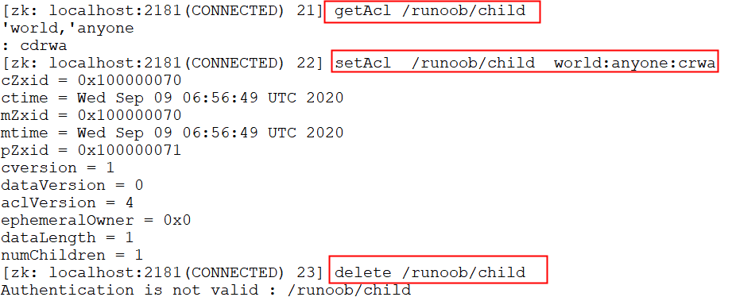
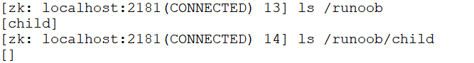
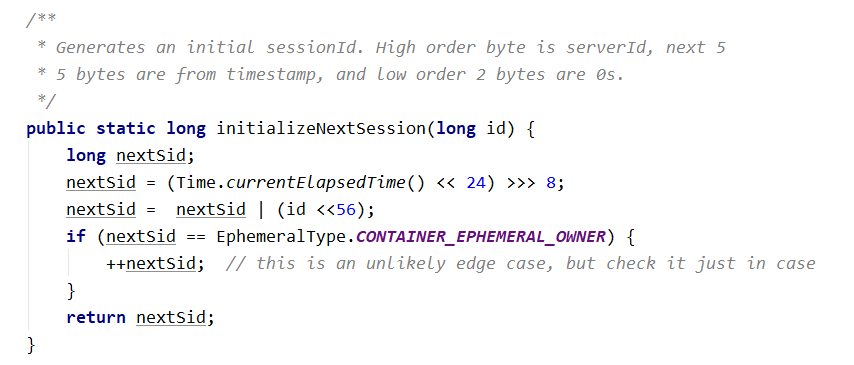
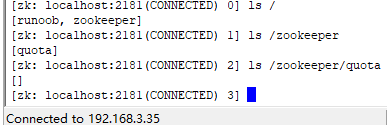

14.0 Zookeeper 分布式锁实现原理
分散ロックは、分散システム間で共有リソースへの同期アクセスを制御する方法の一つです。以下では、zookeeper がどのように分散ロックを実装するかを紹介し、排他ロックと共有ロックの2種類の分散ロックについて説明します。 排他...

13.0 Zookeeper Leader 选举原理
zookeeper の leader 選挙には2つの段階があります。1つはサーバー起動時の leader 選挙、もう1つは実行中に leader サーバーがダウンした場合です。選挙の原理を分析する前に、まず紹介します。

12.0 Zookeeper 数据同步流程
Zookeeper では、主に ZAB プロトコルに依存して分散データの一貫性を実現します。 ZAB プロトコルは2つの部分に分かれます： メッセージブロードキャスト クラッシュリカバリ メッセージブロードキャスト Zookeeper は単一...

11.0 Zookeeper watcher 事件机制原理剖析
zookeeper の watcher メカニズムは、4つのプロセスに分けられます。 クライアントが watcher を登録する。 サーバー側が watcher を処理する。 サーバー側が watcher イベントをトリガーする。 クライアントが wa... をコールバックする。

10.0 Zookeeper 权限控制 ACL
zookeeper の ACL（Access Control List、アクセス制御リスト）権限は本番環境で特に重要です。そのため、この章では特に説明します。ACL 権限はノードに対して関連する読み取り...を設定できます。

9.0 Zookeeper 节点特性
この章では、zookeeper のノード特性と簡単な使用シーンを紹介します。まさにこれらのノード特性の存在により、zookeeper はさまざまなシーンアプリケーションを開発できるのです。 1、同一レベルのノード key ...

8.0 Zookeeper 四字命令
zookeeper は特定の四字コマンドとの対話をサポートしており、ユーザーは zookeeper サービスの現在の状態及び関連情報を取得できます。ユーザーはクライアントで telenet または nc（netcat）... を通じて行えます。

7.0 Zookeeper 客户端基础命令使用
zookeeper コマンドは、zookeeper サービス上で操作を実行するために使用されます。まずコマンドを実行して、新しい session セッションを開き、ターミナルに入ります。 $ sh zkCli.sh 以下では、基本的で一般的に使用されるコマンドについて説明します...

6.0 Zookeeper session 基本原理
クライアントとサーバー間の接続は TCP の長接続に基づいており、client 側は server 側のデフォルトの 2181 ポートに接続します。つまり session セッションです。 最初の接続確立から、クライアント...

5.0 ZooKeeper 数据模型 znode 结构详解
データモデル zookeeper では、zookeeper 内に保存されているすべてのデータは znode によって構成されていると言えます。ノードは znode とも呼ばれ、key/value 形式でデータを格納します。 全体...
- 1
- 2
- 全 2 ページ